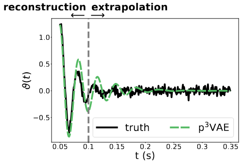

About me
I am a researcher in machine learning for Earth observation. Currently, I'm working on satellite image analysis and wildfire simulation as a postdoctoral research fellow at CNES in collaboration with the SPE lab from CNRS - Corsica University and phi-lab from ESA. My research focuses on semi/self-supervised multimodal learning and on hybrid modeling (the combination of physical models with machine learning models).I completed my PhD at ONERA, Magellium and ISAE-SUPAERO in collaboration with the Toulouse Mathematics Institute on the semantic segmentation of airborne hyperspectral images for mapping impermeable surfaces in large urban areas.
News
June 2025: Our papers introducing DEFLECT and p3VAE have been accepted to ICCV 2025 and Springer Machine Learning, respectively!
June 2025: For the tenth MILO seminar, we were glad to have a presentation of Maud Biquard (ISAE-SUPAERO / CNES) about image restoration with compressive variational autoencoders!
May 2025: For the ninth MILO seminar, we were delighted to welcome Benoit Dufumier (CEA) and Javiera Castillo-Navarro (CNAM) for a presentation about multimodal contrastive learning!
April 2025: For the eighth MILO seminar, we were glad to welcome Luca Savant from Turin University for a great talk about Gaussian Splattings for Earth observation!
Selected publications
|
R. Thoreau, J. Levillain and D. Derksen Accepted to MACLEAN workshop @ ECML-PKDD 2025.
|
|
|
R. Thoreau, V. Marsocci and D. Derksen Accepted to ICCV 2025. [arXiv]
|
|
|  |
R. Thoreau, L. Risser, V. Achard, B. Berthelot and X. Briottet Accepted to Springer Machine Learning. [arXiv] [code]
|
|
R. Thoreau, L. Risser, V. Achard, B. Berthelot and X. Briottet ISPRS Journal of Photogrammetry and Remote Sensing. [paper] [data set] [code] [arXiv]
|
|
|
R. Thoreau, V. Achard, L. Risser, B. Berthelot and X. Briottet IEEE Geoscience and Remote Sensing Magazine. [paper] [code]
|
Teaching
I'm currently giving lectures about machine learning for the MAPI3 master and the L3 FLEX (info / maths) at Paul Sabatier University.Past courses from 2020 to 2023
- Introduction to statistics (lectures) at Paul Sabatier University, 2nd year BS in Biochemistry,
- Integration and probability theory (tutorials) at ENSEEIHT engineering school,
- Statistical foundations of Machine Learning (practical works) at ISAE-SUPAERO, Data & Decision Sciences MS,
- Combinatorial optimization (practical works) at Paul Sabatier University, Computer Science MS,
- Algorithmic (practical works) at Paul Sabatier University, Computer Science BS,
- Introduction to python (practical works) at Paul Sabatier University, Civil Engineering BS.
Student supervision
- April to October 2025, Hugo André, final-year student at ISAE-SUPAERO on deep generative modeling for the inversion of industrial stack plumes from satellite images, in collaboration with Pierre-Yves Foucher (ONERA), Camille Desjardins, Laura Le Barbier and Solange Lemai-Chenevier (CNES).
- March to August 2023, Arthur Cassou, final-year student at ENSTA Bretagne on the integration of physical priors in generative models for hyperspectral data, in collaboration with Laurent Risser, Véronique Achard and Xavier Briottet.
- May to July 2022, Gaspard Loupit, second-year student at ISAE-SUPAERO on the comparison of features extracted by spatial-spectral convolutions to morphological profiles through LIME explanations for hyperspectral images, in collaboration with Véronique Achard.
- April to July 2022, Clément Lefranc, master student in computer science at Paul Sabatier University on the development of a QGIS plug-in for active learning on Earth observation data, namely AL4EO.
MILO scientific seminars
MILO seminars are scientific seminars about mathematics and computing, e.g. machine learning, applied or applicable to Earth observation. I've been organizing the seminars since May 2024 within the COMET Signal and Image Processing community, a community of experts initiated by CNES, the French spatial agency, in order to gather academic researchers and engineers from the space industry in France. If you would like to present your work, please reach out![Past and coming seminars]